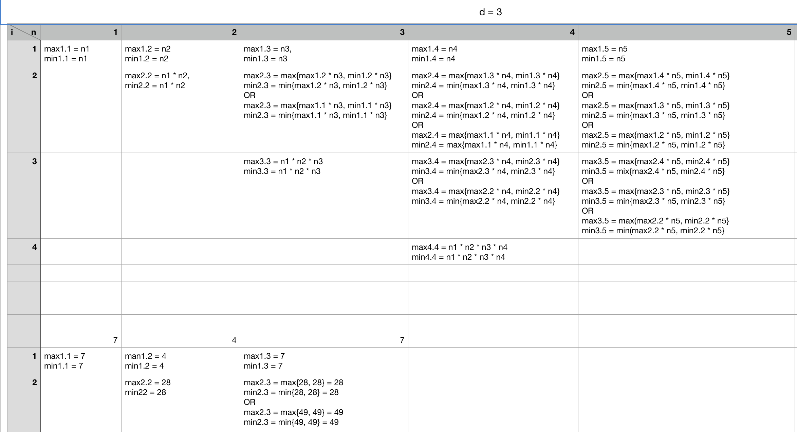

求间隔子数组的最大乘积。相邻元素的最大间隔为d，子数组长度为k。
相关题目：编程之美2.13: 子数组的最大乘积
题目：（网易2017年合唱团）有 n 个学生站成一排，每个学生有一个能力值，牛牛想从这 n 个学生中按照顺序选取 k 名学生，要求相邻两个学生的位置编号的差不超过 d，使得这 k 个学生的能力值的乘积最大，你能返回最大的乘积吗？
输入：每个输入包含 1 个测试用例。每个测试数据的第一行包含一个整数 n (1 <= n <= 50)，表示学生的个数，接下来的一行，包含 n 个整数，按顺序表示每个学生的能力值 ai（-50 <= ai <= 50）。接下来的一行包含两个整数，k 和 d (1 <= k <= 10, 1 <= d <= 50)。
输出：输出一行表示最大的乘积
示例：
3
7 4 7
2 50
输出：
49
规划过程 ；
max[k][i] 表示选到第k个数字，并且第k个数字的下标是i，这些数字所能产生的最大累乘积
min[k][i] 表示选到第k个数字，并且第k个数字的下标是i，这些数字所能产生的最小累乘积
则max[k+1][i+1] = max{ max[k][i] * nums[i+1], min[k][i] * nums[i+1] }
由于选定的两个数的下标之差在(1 ~ d)之间，所以上述的 max[k][i], min[k][i] 中的 i 应为一个变量, 从 max{ (i-d), 0 } 到 (i-1) 进行遍历。之后我们就得到了 k+1 个学生，并且以第 i+1 个学生结尾所能产生的最大乘积，如果 i+1 大于 k+1，我们还要遍历从 k+1 到 i+1 的所有结果中找出最大值。
同理可得:
min[k+1][i+1] = min{ max[k][i] * nums[i+1], min[k][i] * nums[i+1] }
1 2 3 4 5 6 7 8 9 10 11 12 13 14 15 16 17 18 19 20 21 22 23 24 25 26 27 28 29 30 31 32 33 34 35 36 37 38 39 40 41 42 43 44 45 46 47 48 49 50 51 import java.io.BufferedReader;import java.io.IOException;import java.io.InputStreamReader;public class WY_HeChangTuan public static void main (String[] args) throws IOException BufferedReader bufferedReader = new BufferedReader(new InputStreamReader(System.in)); String line = null ; while ((line = bufferedReader.readLine()) != null ) { int n = Integer.parseInt(line.trim()); line = bufferedReader.readLine(); int [] nums = new int [n]; String[] s = line.trim().split(" " ); for (int i = 0 ; i < n; i++) { nums[i] = Integer.parseInt(s[i]); } line = bufferedReader.readLine(); String[] s1 = line.trim().split(" " ); int k = Integer.parseInt(s1[0 ]); int d = Integer.parseInt(s1[1 ]); long [][] max = new long [k][n]; long [][] min = new long [k][n]; for (int i = 0 ; i < n; i++) { max[0 ][i] = nums[i]; min[0 ][i] = nums[i]; } for (int i = 1 ; i < k; i++) { max[i][i] = max[i-1 ][i-1 ] * nums[i]; min[i][i] = max[i][i]; } for (int i = 1 ; i < k; i++) { for (int j = 2 ; j < n; j++) { for (int m = Math.max(0 , (j-d)); m <= (j - 1 ); m++) { if (m == Math.max(0 , (j-d))) { max[i][j] = Math.max(max[i-1 ][m]*nums[j], min[i-1 ][m]*nums[j]); min[i][j] = Math.min(max[i-1 ][m]*nums[j], min[i-1 ][m]*nums[j]); } max[i][j] = Math.max(Math.max(max[i-1 ][m]*nums[j], min[i-1 ][m]*nums[j]), max[i][j]); min[i][j] = Math.min(Math.min(max[i-1 ][m]*nums[j], min[i-1 ][m]*nums[j]), min[i][j]); } } } long res = Integer.MIN_VALUE; for (int i = k-1 ; i < n; i++) { res = Math.max(max[k-1 ][i], res); } System.out.println(res); } } }
动态规划的递归数组如下所示：
